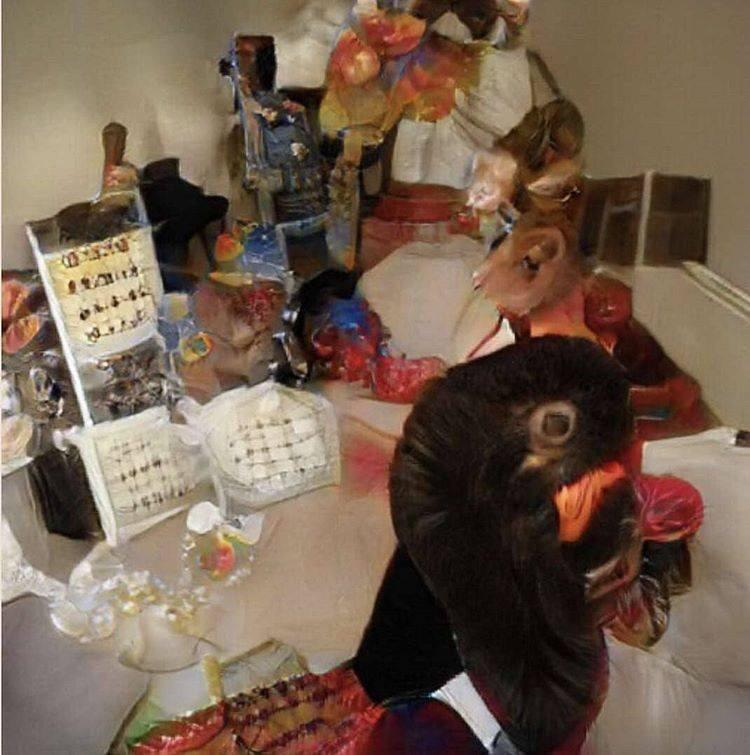

Day 62

Jacob Collier (feat. JoJo) - It Don't Matter - Djesse Vol. 2 - 2019
还是 NPR Tiny Desk，这次是 Jacob Collier。他的 Tiny Desk 是我第一次听。听到这首 I don’t Matter 还挺好听，就发一下。
还有首 He Won’t Hold You 也很不错，是在另一个 Tiny Desk Concert 听到的，演出里四个人都是他自己，不知道是什么魔法 www 听到 He Won’t Hold You 第一句感觉 DNA 动了，仔细想半天想起来是和皇后的 Somebody to Love 里的 “Anybody~” 一个调。
It don't matter what your papa gon' say
(Gonna love you any old way)
It don't matter 'bout the games you play now
(Gonna love you any old way)
It don't matter what the preacher gon' pray
(Gonna love you any old way)
'Cause when you wake up in the morning, gonna throw it all away
It don't matter if you're here to stay
(Gonna love you any old way)
What the people think about you never gonna stay the same
(Gonna love you any old way)
Well, maybe you're gonna run away
(Gonna love you any old way)
When you wake up in the morning, gonna throw it all away
And it feels like (whoa, whoa, whoa, whoa)
In the morning gonna feel like (whoa, oh, no-whoa-whoa)
Ooh-ooh-ooh, oh-oh-oh it feels like (whoa, whoa, whoa, whoa)
See everybody clap your hands if it feels like (whoa, whoa, whoa-whoa-whoa-oh)
It don't matter if you gone astray
(Gonna love you any old way)
'Cause tomorrow will come it's gonna be okay, yeah
(Gonna love you any old way)
Never even matter if you sleep all day
(Gonna love you any old way)
'Cause when you wake up in the evening, gonna throw it all away
Feels like (ah, ah, ah, ah)
Does anybody here know what I'm talking about, say (whoa, oh, no-whoa-whoa)
Oh, feel like (whoa, whoa, whoa, whoa)
Everybody clap your hands if you feel like (whoa, whoa, whoa-whoa-whoa-oh)
Jay, play
(Play it boy)
Oh yeah
Oh yeah
Oh yes, oh-oh
It feels like (whoa, whoa, whoa, whoa)
And in the morning gonna feel like (whoa, oh, no-whoa-whoa)
Whoa, whoa, whoa, whoa, whoa-oh-oh-oh (whoa, whoa, whoa, whoa)
In the morning gonna feel like (whoa, whoa, whoa-whoa-whoa-oh)
It don't matter what they say
I will be there
Let those voices fade away
I will be there
It don't matter what they say
I will be there
Let those voices fade away
I will be there
It don't matter what they say
I will be there
Let those voices fade away
I will be there
It don't matter what they say
I will be there
Let those voices fade away
I will be there
Source: AZLyrics
题外话，这大哥的长相让我的内置人种辨识器混乱了。仔细看他的时候，感觉什么都像又什么都不像，大脑会疲惫，像是看那种 AI 合成的图片，看起来正常，但仔细看什么都认不出来，比如这张：

有个有趣的视频讲了这种图片：Can You Name One Object In This Photo?